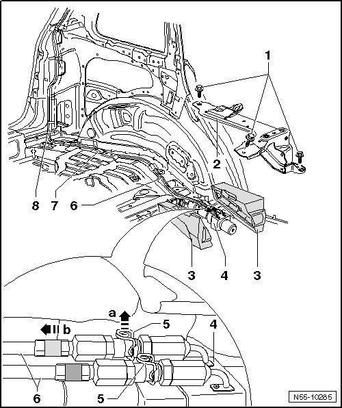
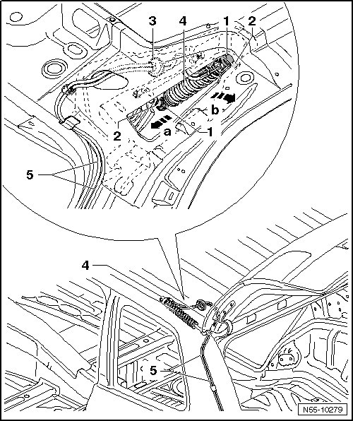
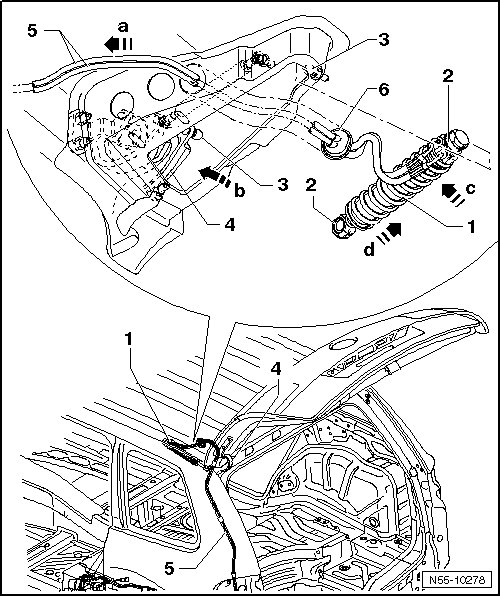

Hydraulic Rear Lid Drive Motor Hydraulic Cylinder
Rear Lid
Hydraulic Rear Lid Drive Motor Hydraulic Cylinder
Removing

- Remove left side wall trim.
- Remove left sill panel strip.
- Remove roof trim.
- Remove bolts - 2 - and remove bracket - 1 -.
- Fold up noise insulation - 3 -.
- Protect surrounding components from any hydraulic oil that may leak out.
- Pull clips - 5 - up - arrow a - until lines - 6 - can be loosened in - direction of arrow b - from hydraulic pump connections - 4 -.
- Remove foam strips - 7 - and loosen lines - 6 - from cable ties - 8 -.

- Remove gas-filled strut cover, from 11.2006. Refer to --> [ Gas-filled Strut Cover, from 11.2006 ] Gas-Filled Strut Cover, From 11.2006
- Press grommet - 3 - out of opening.
• The lines - 5 - are now completely loosened from body.
- Reach under spring clips - 1 - using a small screwdriver.
- Lift the spring clips - 1 - just far enough so it is possible to slide them over the ball sockets.
- Remove hydraulic cylinder - 4 - from ball stud - 2 -.
- Slide the hydraulic cylinder as far back as possible - arrow a - between the hinges.
- Guide hydraulic cylinder out of opening - arrow b - while guiding lines - 5 - back.
After removing hydraulic cylinder - 4 - with wires - 5 -, slide spring clips - 1 - back immediately.
Installation

- Guide hydraulic lines - 5 - through hydraulic cylinder opening and through opening for lines - arrow a -.
- Press grommet - 6 - into opening.
- Check seating of spring clips - 2 -.
- Slide the hydraulic cylinder - 1 - as far back as possible through the opening - arrow b - and between the hinges.
- Guide hydraulic cylinder - arrow c - completely into opening.
- Slide hydraulic cylinder into position - arrow d - so that it can be pressed onto ball stud - 3 -.
- Route hydraulic lines - 6 - and secure them with cable brackets - 8 - and foam strips - 7 -.
- Press lines - 6 - onto connections - arrow a - until clips - 5 - snap downward - arrow b - and engage.
- Make sure the lines - 7 - are securely attached to the connections - 4 - on the hydraulic pump.
- Fold noise insulation - 3 - together and position bracket - 2 -.
- Tighten bolts - 1 -, tightening specification: 60 Nm.